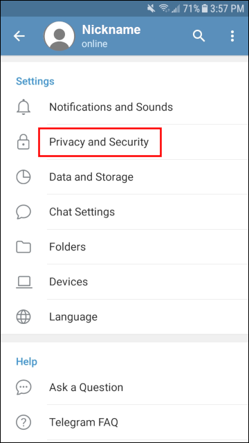
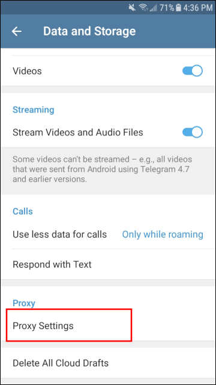
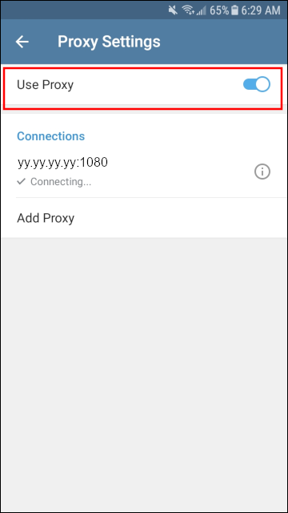
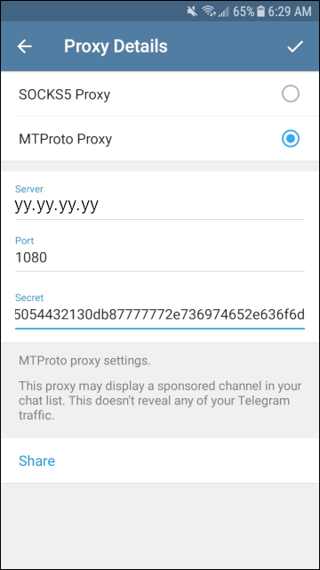

Telegram Privacy Settings
We generally recommend avoiding mobile technology and accounts tied to your phone number. We include Telegram Messenger here only because it has become so popular.
This page gives some suggestions to make Telegram more private. You should specify your privacy settings when you first create a Telegram account, before you start adding contacts or groups.
1. Account Details
From the hamburger menu, open Settings, and make your details more private:
- Use a nickname, not your legal name
- Use a profile graphic, not a real photo of yourself
- Set a username, which will allow you to hide your phone number
- Leave the Bio blank
2. Privacy and Security
From Settings, tap Privacy and Security.
2.1. Configure Privacy
In the Privacy section under Privacy and Security:
- Set your phone number visiblity to Nobody, and also restrict who can find you by phone number to My Contacts only
- Set Last Seen & Online visibility to Nobody
- You can leave your photo visibility at Everbody, provided it is not a real photo of you
- Consider whether you want to take calls from Nobody and use text messages only
2.2. Configure Security
Scroll down to the Security section under Privacy and Security.
- Set Two-Step Verification On, and on the next screen enter a password you’ll use if you log on from a new device (or if you explicitly log off and log on this device)
- Think about what you would like to happen if you are absent for more than a couple of weeks. Would you like to delete your account if you are away for one month, or would you like to leave it there for up to twelve months?
2.3. Configure Contacts
Scroll down to the Contacts section under Privacy and Security.
- Tap Delete Synced Contacts
- Turn Sync Contacts off
- Turn Suggest Frequent Contacts off
3. Proxy Settings
3.1. Types of Proxy
If you are in a country that blocks Telegram Messenger, you will need to configure a proxy server. Several choices are available for censorship circumvention, especially if you use Telegram Desktop.
- You can create your own MTProxy server, either with the official C version or with Alexander Bersenev’s Python version, or you can use one of the free, public-interest servers.
- You can run Tor Browser on your desktop and specify to Telegram that there is a SOCKS proxy listening on localhost port 9150.
- You can run the v2rayN client on Windows desktop and tell Telegram there is a SOCKS proxy listening on localhost port 10808. For the V2Ray server, you can either create your own , or you can use a paid or free server created by someone else.
3.2. Configure to Use Proxy
We will illustrate the example of MTProxy on Android. From Settings, tap Data and Storage. Scroll down, and tap Proxy Settings.
Toggle Use Proxy to the ON position.
Enter the proxy details for your MTProto or SOCKS5 proxy.
Save the settings with the check mark. Go back to the Proxy Settings screen. It will take a few seconds to connect to the proxy.
Updated 2020-10